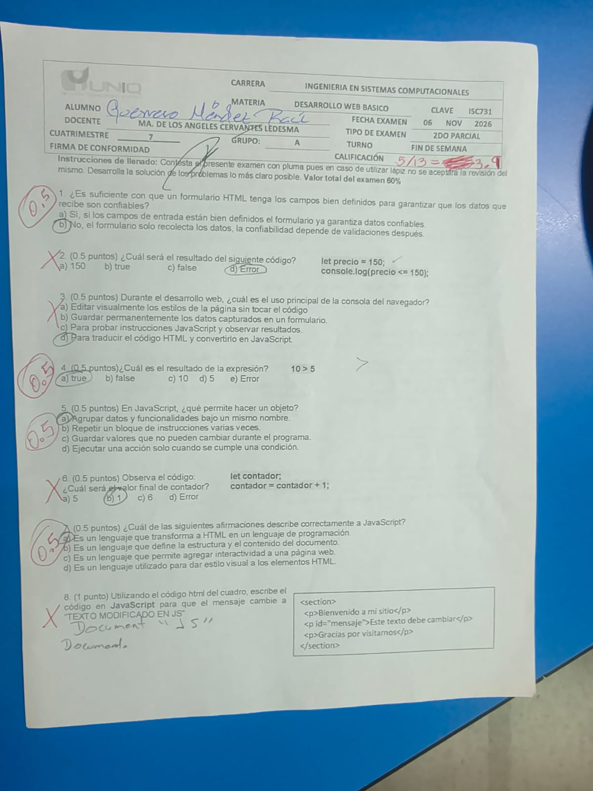

Página 1er parcial
Creación:Página inicial con etiquetas de encabezado (h1, h2, h3) y atributos de estilo para cambiar el color y la posición del texto.
Materia: Desarrollo Web Básico
Nombre: Guerrero Méndez Raúl
ESCRIBE AQUÍ tu perfil profesional: qué estudias, en qué te quieres especializar y qué habilidades tienes.
ESCRIBE AQUÍ la razón por la que creaste el portafolio.
Aquí van las evidencias del primer parcial.
Página inicial con etiquetas de encabezado (h1, h2, h3) y atributos de estilo para cambiar el color y la posición del texto.

Documento HTML con su estructura básica (html y body) y un pie de página con los datos del autor.

Uso de las etiquetas ul, ol y table, junto con strong, em y br, para estructurar y dar formato al contenido de la página.

Inserción de imágenes con img y uso de picture con source para mostrar una imagen distinta según el ancho de la pantalla.

Tarjetas diseñadas con CSS avanzado (degradados, sombras y transiciones) que reaccionan al pasar el mouse con la pseudoclase :hover.

Sitio web de la estética Clean Car con HTML semántico y CSS: menú, portada con imagen, listas, tabla de servicios y datos de contacto.
Aquí van las evidencias del segundo parcial.

Aquí van las evidencias del tercer parcial.

ESCRIBE AQUÍ con tus propias palabras.
ESCRIBE AQUÍ con tus propias palabras.
ESCRIBE AQUÍ con tus propias palabras.